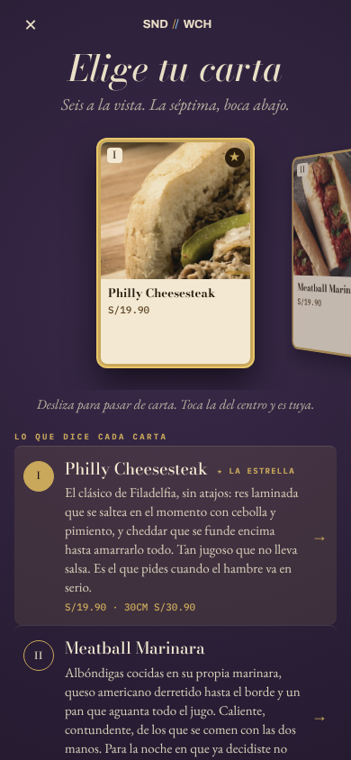
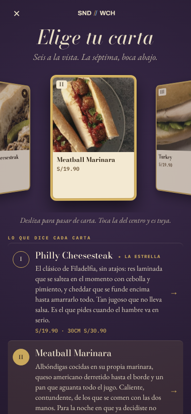
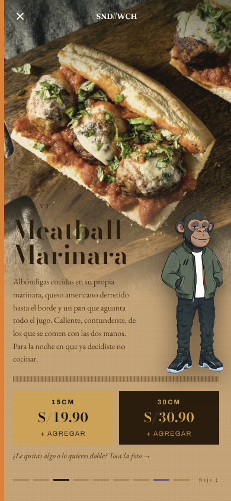
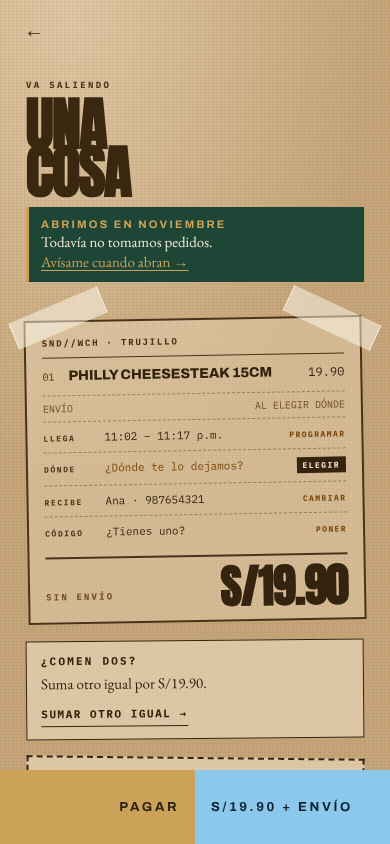
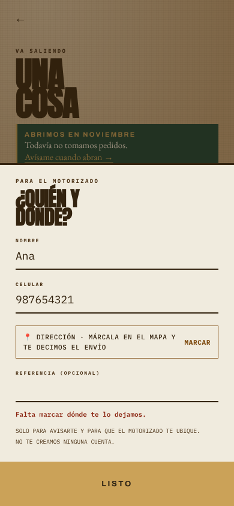
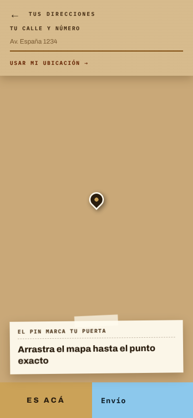
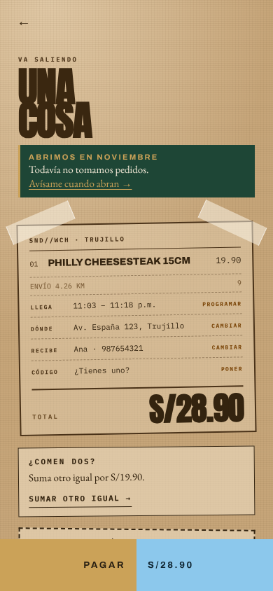

Hoy, si tocas una carta del costado, primero se mueve al centro y hay que tocarla otra vez. Quien toca una carta ya eligió: la propuesta la abre al primer toque. Deslizar sigue volteando las cartas igual que ahora.

1
2
Por qué: cada toque que no hace nada visible se siente como un error, y en el celular un toque perdido es donde la gente se va. No tengo un estudio peruano de este caso puntual; es lo que muestra contar los toques en la app.
Hoy, si llenas nombre y celular pero no marcas el mapa, «Listo» cierra la hoja; al tocar Pagar la hoja vuelve a abrirse con «Falta marcar dónde te lo dejamos». La propuesta va directo al mapa y, al marcar, vuelve al pedido listo para pagar.

2
3

Si ya marcaste el mapa, «Listo» hace lo de siempre. Con nombre o celular vacíos, sigue avisando arriba de la hoja como hoy. (El mapa sale en blanco en esta lámina porque Google Maps no carga en el equipo donde se hizo; en el celular se ve el mapa de siempre.)